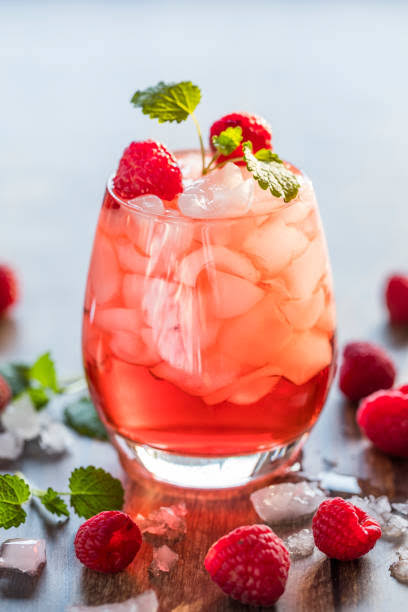
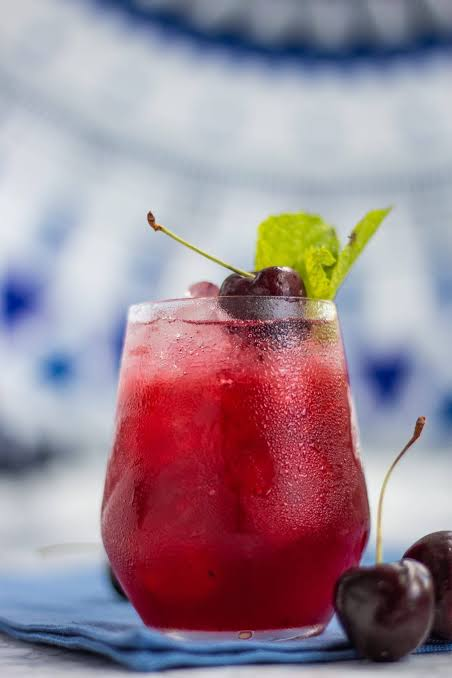
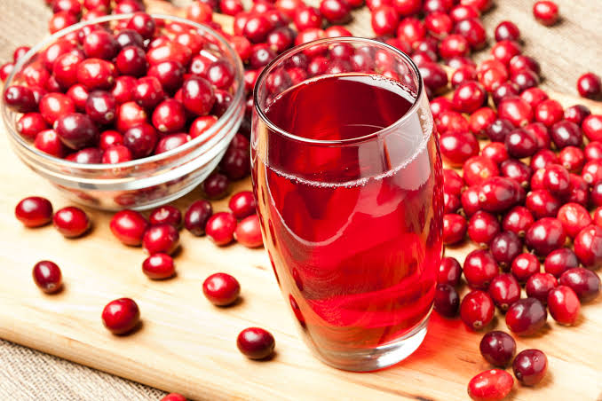

Cheio de vitaminas e minerais, este elixir combina os benefícios saudáveis do chá verde com uma pitada de folhas de camomila e gengibre
Combinando duco de framboesa com capim-limão, raspas de gelo e o fruto da roseira-brava, este drinque supergelado vai clarear e revigorar sua mente
Essências de vacínio e cereja misturadas a uma base de chá de erva da flor do sabugueiro colocarão você em estado relaxado de felicidade rapidamente.
Acorde para os sabores de oxicoco e hibiscos neste elixir rico em vitamina C.
De volta ao bar